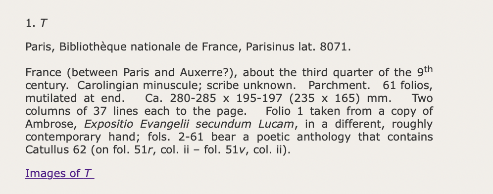
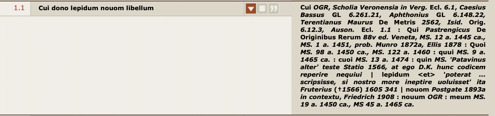
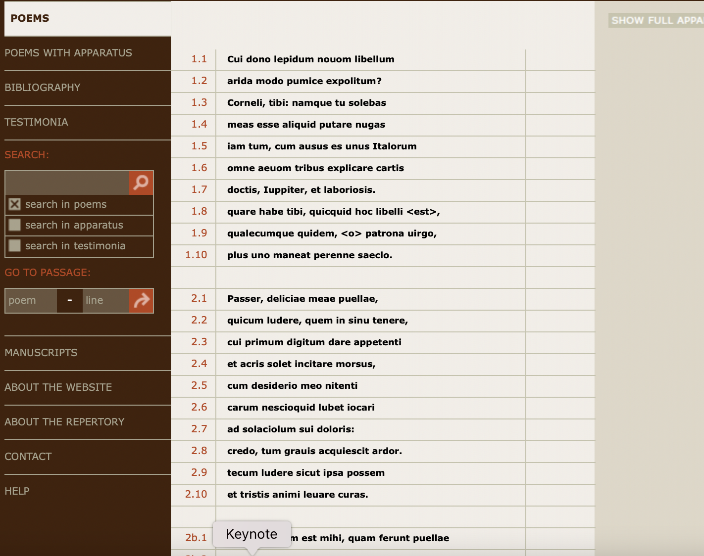
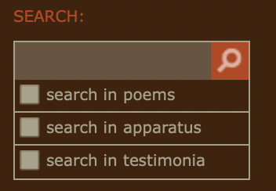
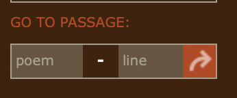
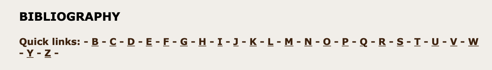

Catullus Online
Table of Contents
Abstract
Catullus Online, a collection of the author’s poems and a repository of the conjectures collected through the centuries, was published by Dániel Kiss with the support of the Abteilung für Griechische und Lateinische Philologie of the Ludwig-Maximilians-Universität München, in 2013. Kiss faced many difficulties in the creation of such a resource, both from a technical standpoint and from the inner complexity of the philological tradition behind Catullus and his poems. He still ended up creating a rather interesting Scholarly Digital Edition, which has made such work more accessible, even to those that don’t typically belong in the academic world, offering the possibility to access high-quality photos of the manuscripts, a curated apparatus and much other information about the texts and the author, with just a simple click. What is mostly missing in this project is a more sophisticated digital interface, a lost opportunity to further enhance the quality of such a Scholarly Digital Edition.
Bibliographic identification of the Scholarly Digital Edition
Catullus Online was developed thanks to the research project An Online Repertory of Conjectures for Catullus (2009–2013), promoted by the Center for Advanced Studies and the Abteilung für Griechische und Lateinische Philologie of the Ludwig-Maximilians-Universität München, which financed the project. The result of the project is now reachable as a digital resource through the URL “http://www.catullusonline.org”.
Dániel Kiss is the editor and creator of Catullus Online, and he was helped by a group composed of philologists like Giuseppe Gilberto Biondi and Michael Reeve and experts in Classics like David Butterfield, Carlotta Dionisotti, Julia Gaisser, Daniel Hadas, Stephen Harrison, Jeffrey Henderson, Giovanni Maggiali, and John Trappes-Lomax who worked with him on tracing conjectures – critical reconstructions of corrupted passages of text – and rare books. After having been published in 2013, the work on Catullus Online was further developed during the research project The textual transmission of Catullus (2015–2017), which was realized at the Universitat de Barcelona.
General parameters and introduction
The idea behind this project first appeared to Kiss during his stay at Scuola Normale di Pisa in 2005, where he was confronted with the controversial textual history of Catullus’ poems and their manuscripts (Kiss 2020, 101). To better understand this complex history, Kiss went to the University of North Carolina at Chapel Hill in 2007, where he was able to study the Halle-Ullman Papers as well as the collation and the transcription of 113 manuscripts of Catullus made by William Gardner Hale, Euan T. Sage, Berthold L. Ullman, and other scholars of the 20th century.1 By this time, he chose not to create a new edition of Catullus’ poems, and instead, he focused on “mapping the manuscript tradition and drawing up conjectures”(Kiss 2020, 101).
Catullus Online was first created as a repository of conjectures and later – with the development and employment of further elements – as a digital critical edition. The choice of an online publication was due to the various problems that came with printed editions since many were expensive and not accessible across the world, whereas a digital publication instead allowed Kiss to make his project more accessible and to display some additional elements (e.g., search tools, the possibility to visualize the images of the manuscript and to consult more easily the apparatus) that could not be used in a printed edition (Kiss 2020, 102-103).
It is easy to understand the general parameters of Catullus Online since the titles of its various sections are very explicit, and Kiss has done a good job of explaining his work and his editorial principles through the two sections in the menu on the left in the lower side of the site: “ABOUT THE WEBSITE”, where he explains the journey to the creation of the project and then of the website, and “ABOUT THE REPOSITORY”, which instead illustrates his philological attitude towards the manuscripts and conjectures. In these two sections, there are many links to external web resources, which are clickable and offer the possibility to explore further the sources used for Catullus Online, although a few have not been updated and will lead to old or inactive pages. To know more about the methods used in this project, users can read Catullus Online: A Digital Critical Edition of the Poems of Catullus with a Repertory of Conjectures, an essay written by Dániel Kiss, where he further explains his working process and his editorial choices.
Subject and content of the edition
Catullus Online is composed of the full text of all 116 poems written by Catullus, accompanied by a critical, diachronic, and positive apparatus – meaning that both accepted and rejected readings are present (Macé and Roelli 2015) – containing the textual notes and all the conjectures which have been made on the text so far and which Kiss has collected through his work.
The text of the poems is based on the manuscripts which stem from the Codex Veronensis (V), the oldest witness of Catullus’ manuscripts, and is directly accessible through “POEMS”, whereas to use the apparatus, the user will have to go to the section “POEMS WITH APPARATUS”. The biggest achievement of such a format is that it creates a free curated digital edition of Catullus, allowing the user both to have complete access to all the conjectures found by Kiss and to interact with different texts and even unpublished papers (e.g., Berthold L. Ulman’s ones). The editor focused on the investigation of his sources, many of which had not been verified by previous scholars. To do so, he proceeded to personally transcribe half a dozen undocumented manuscripts he found at Chapel Hill and two incunables that were not available in any libraries of Munich and neither online. This resulted in Kiss owning a collation, a reproduction, or a transcription of all known manuscripts of Catullus that were copied before 1520 and of all printed editions from the editio princeps of 1472 up to the first Aldine of 1502 (Kiss 2020, 104-105). Other than Catullus Online, there are many classical Latin texts already available online, but unlike this case, they are just digital reproductions of the printed edition, in some cases scanned with OCR, with no optional functionalities or a full apparatus (Nappa 2017).
Another achievement of Catullus Online is the fact that users can directly visualize the images of the manuscripts, and the possibility to access these helps to shed light on the complex textual schema behind Catullus’ tradition, allowing academics – and other interested users – to consult the manuscripts behind the text of the project. More precisely, we can see images of only O, G, and T since Biblioteca Apostolica Vaticana – which is currently holding the manuscript R – does not allow the online publication of high-resolution images of its manuscripts outside of its website (Kiss 2020, 107). The possibility to directly see the images of the manuscripts employed for a critical edition is not frequent, mostly due to traditional copyright restrictions. In fact, many libraries do not allow high-quality reproductions of the manuscripts they store, and they are neither trained nor funded to handle the incoming need for digitization other than conservation. To solve this problem, new application format interfaces – e.g., IIIF, the International Image Interoperability Framework – are being implemented to offer the possibility to let the libraries – e.g., the Bodleian Library – continue hosting their images on their home servers while allowing other sites to display them, offering the possibility to easily share various cultural artifacts on the web (Mastronarde 2020, 116).

- T, O, G, R, m, S.
These manuscripts are introduced with a small description of their main details, such as where and when they were copied, the writing used, their measures, and other important specifics, as can be seen in Figure 1. - Other surviving manuscripts of Catullus’ Liber.
They are each identified by a number and ordered alphabetically. This system is based on the list of manuscripts created by D. F. S. Thompson (1997, 77-92) and further elaborated and curated by Kiss in 2012. They have their main details – such as where they are now stored, and where and when they were copied – next to their identifying number, as can be seen in Figure 2.
In “ABOUT THE WEBSITE” and “ABOUT THE REPOSITORY”, all the information about the methods and tools that have been used to build the repository and the website is given, and in “HELP” and “CONTACT”, you can find all the useful information to navigate the website and to properly contact the editor for feedback or further inquiries. While the general interface, the navigation bar, and the sections are given in English, the poems are available only in Latin, with no translation into any other language offered. To offer a translation at least into English would be very helpful since this edition is meant to reach not only scholars but anybody with Internet access (Kiss 2020, 103) and it might also involve people who do not have a solid base in Latin in the Catullus Online project. A few other features that could be implemented are sections or pages about Catullus’ life and his context, as well as to encourage other kinds of studies on the poems, such as historical or linguistic ones.
Aims and methods
Catullus Online was originally born as a repository of conjectures, but later, the editor chose to transform it into a digital critical edition by adding the text of the poems to the repository. The digital aspect of this edition was meant to allow for searchability through an interconnected text, a user-friendly and easy-to-use interface supported by all browsers, and reminiscent of the standards upheld by printed editions (Kiss 2020, 103). The constitution of the text is made in a rather traditional way, with an apparatus and a repertory of conjectures (Nappa 2017), to avoid distracting the viewer from the focal points and complicating the consultation of the website.
The two missions of this digital critical edition are to offer a reliable text and to give students a research tool for the future (Kiss 2020, 113-114). An audience that could benefit from this edition is also undergraduates or secondary school students, as the easy-to-use interface would allow them to study the poems and the apparatus easily to deepen their knowledge (Nappa 2017). The main manuscripts are known as TOGR, and since they are all independent of each other, they all have source value (Kiss 2020, 103):
- Oxoniensis, copied in Northern Italy, 14th century, is currently stored in Oxford, Bodleian Library (O).
- Sangermanensis, copied in Verona in 1375, is currently stored in Paris, Bibliothèque Nationale de France (G).
- Romanus, copied in Florence 1375–1395, currently stored in Rome, Biblioteca Apostolica Vaticana (R).
- Thuaneus, an anthology of Latin poetry copied around 850 in central France stored in Paris, Bibliothèque Nationale de France; unlike the others, it does not derive directly from the Codex Veronensis (T) (Kiss 2020, 101-103).

The manuscripts are either recognized through their sigla or with their number in the list, while the apparatus itself is ordered chronologically, registering all the first instances of the conjectures stored inside of it. However, there are a few exceptions and limitations due to the still unknown relationships between many Renaissance manuscripts and humanistic conjectures. Not having a fully developed stemma of all of Catullus’ manuscripts and having many families of codices that cannot be linked to any of the parent nodes (TOGR) has made the task of fully understanding the relationships between manuscripts and their dates rather difficult and complex (Bertone 2017, 1). Kiss distanced himself from Mynors’ theories – refusing the theory of the eight layers of humanistic conjectures2 – and edition, in the aspects of presentation and editing, for example, by choosing not to reproduce here the fragmentary Priapea, placed by Muretus between the poems 17 and 21 (Nappa 2017).
Catullus Online does not follow the TEI Guidelines since, back in 2009, when the project was planned by the editor, he was not aware of the possibility of using models that were different from the digitized book and the text-only online publication. By then, the TEI consortium had already developed digital guidelines for digital critical editions like Catullus Online. However, these guidelines would not have been compatible with the project since the apparatus had to be marked up manually or semi-automatically. This would have been too time-consuming for the project at hand, although the guidelines might have been useful as a starting point since they offer a rather durable and robust system of tags (Kiss 2020, 103-104).
Nevertheless, the website employed a standard for the texts: HTML, a formal recommendation by the W3C, used to showcase documents in a browser. Such a standard is solid and quite easy to use, making the project further interoperable and structured through an understandable setup. It can also be adapted for different formats (such as mobile or desktop) and can be used in all major browsers, as was Kiss’ original objective in creating his digital edition.
Another aspect to take into consideration, aside from the employment of only a very basic but solid standard for the encoding of texts, is the fact that Kiss has not allowed Catullus Online to be citable through CTS (Canonical Text Services), losing a chance to allow the website to be accessible and employ the tools available through such a service (Blackwell and Smith 2014). This also limits the potentiality of such a project in the world of linked open data, which has by now become a norm in the digital humanities environment.
All the information about the aims and methods of Catullus Online can be found in the “ABOUT THE REPOSITORY” section on the website and in the essay Catullus Online: A Digital Critical Edition of the Poems of Catullus with a Repertory of Conjectures (Kiss 2020, 99-114), where all methods, theories, and ideas are documented to fully explain the process behind the choices made on the text constitution.
Publication and presentation
Kiss worked with Woodpecker Software to construct the website on which Catullus Online is presented, and with Stalker Studio for its design. To realize Catullus Online, the engineers of Woodpecker Software employed the programming language PHP and the open-source database management system MySQL, which has been employed mostly in the apparatus part (Kiss 2020, 105-109).
As mentioned before, the TEI Guidelines are not employed, and neither a model like the one used by the digital project Musisque Deoque (Biondi et al. 2005) – a platform where many digital critical editions of Latin literature are stored – is used. The poems and the apparatus would need to be manually or semi-automatically encoded, which would be a rather slow process for the huge number of conjectures stored in Catullus Online. Instead, Kiss’ project seems to remain on the same level as the digitized books and the simple text-only online publications (Kiss 2020, 103-104). The sole standard employed by the author for the texts is, as mentioned above, HTML, offering a solid basis. However, this could be improved in the future by using the TEI Guidelines.

As much as this interface is very easy to understand, it is not very accessible and usable since reading the text of the poems and their apparatus might be a rather tiring task for users. In fact, showcasing the full texts might be a bit troubling to read and follow, even more so on a screen with a small font and a high density of text.
 
- A search box that allows you to search a word inside the poems, the apparatus, or the testimonia (or through all three options); this is very useful because it allows the user to confront various passages in the text with a similar theme or use a specific keyword to see how it is differently used in the text, or its popularity, as shown in Figure 7.
- The second search tool can be employed, instead, to search a specific paragraph. It will simply jump into a specific poem or line selected, and obviously, in this case, it is important to point out that the user would need to know which specific passage they are searching. This second search tool is a bit faulty since it sometimes either does not work at all or will not jump directly to the poem or line selected, as shown in Figure 8.

All the rights of this project – the author’s research, his work on the text, and the website – are copyrighted by Dániel Kiss (2013, 2017). For the images, instead, all the rights belong to the institution hosting the photographed manuscripts. The Bibliothèque Nationale de France has given the permission to reproduce digitally the images of the manuscripts T and G, whereas the Bodleian Library at first requested a small fee for the publication of the images of O, but now they are freely available on the Digital Bodleian (Mastronarde 2020, 116-117).
The website is not hosted on an institutional site, although that is something that Kiss hopes to obtain in the future since it would make the site much more stable and durable in time. Currently, he has been paying an annual fee to Woodpecker Software for the domain rights of Catullus Online. The platform is accessible from every kind of browser, although in the future, technological change problems might prove to be rather intense for the website, even more for mobile users since a responsive version has not been developed yet and a printed edition is not available (Kiss 2020, 109-112).
It is also important to state that the content and rendering of the website are tightly linked, which appears to be quite a limitation for the project as it does not allow the ordinary user to consult the project offline, and neither can they store the texts and apparatus elsewhere to properly annotate them. It would be good in the future to study a solution that would allow the users to access the website differently, without relying entirely on its rendering, and by allowing the possibility to download the apparatus and texts or even just simply mark the texts with their annotations.
In the future, it is also important to review the content of Catullus Online since, over the years, growing feedback from the users has been collected. This could be useful to update the edition with newfound conjectures and ideas, and this was possible thanks to the presence of Catullus Online on Facebook, which has proved to be extremely useful for the first years of the website since it allowed the editor to promote it in groups about classics and digital humanities (Kiss 2020, 109).
Conclusion
According to Patrick Sahle’s definition, Catullus Online is a Scholarly Edition, a “critical representation of historic documents” (Sahle 2016, 23). The choices regarding the reproduction of the text and the additional material chosen to portray the historical tradition behind Catullus’ poems are explained, justified, and stated by the editor through specific editorial methods and based on academic studies that are respected throughout the entire edition. The historical aspect of this edition, on the other hand, is visible in the apparatus and the “MANUSCRIPT” section where the user can fully witness the diachronic dimension of Catullus’ tradition, being able to bridge the distance in time directly. There is also a full representation of the subject and all the self-stated rules – e.g., to offer a way to freely access the conjectures, to collect as many conjectures as possible and to give the user some extra tools to further understand the context and historical tradition – that are respected throughout the entirety of the edition (Sahle 2016, 23-26).
It is also a Scholarly Digital Edition but with some reservations: it imposes a specific digital paradigm – an algorithm creates a specific way to visualize the text (Sahle 2016, 26-27) – and a specific standard for the texts – HTML. These two elements are followed in the entirety of the edition’s creation, but many aspects (e.g., “accessibility, usability, and computability”) remain truly underdeveloped. Regarding this, I do believe that the lack of models and examples at the time the author started working on Catullus Online brought Kiss to have a very basic digital model for his project: there is no employment of shared practices such as TEI or CTS, and the interface of the website struggles to be responsive and accessible.
As stated in the paragraphs above, Catullus Online does certainly offer the user a scholarly edition in a digital format, and even though it solves many of the problems that come with a printed edition (e.g., the possibility to access the texts and the apparatus freely), it still retains some of the typical characteristics of printed editions, such as the impossibility to view the edition in different formats or the limited responsivity, due to the absence, for example, of an infrastructure that adapts to the device the user is employing.
There is certainly a discussion about the digital development of the edition, alongside an explanation of all the choices of the author around it, furthermore, reinstating a paradigm. However, as Kiss was not the one who worked on the technological side – instead, it was a private studio (Woodpecker Software) – there is little to no knowledge about the infrastructure hosting the website, hence limiting the reusability of such a model for other editions.
This brings the project to be, indeed, digital but at a basic level and with many sectors that could be further improved by all the new standards, models, and practices developed over the years. Although Catullus Online is not digitally perfect, it hopes to be a starting point for the development of further studies on Catullus’ tradition (Kiss 2020, 112-114).
Suggested Future Implementations
Here are a few suggestions that could help Catullus Online broaden its horizons in the digital realm:
- Kiss would do well to adapt the edition to the TEI Guidelines to offer a more durable service over time.
- It would also be an improvement for the edition to allow Catullus Online to be citable through the CTS protocol. It could employ an implementation similar to the one in the Perseus Digital Library, which combines both the CTS system and linked data, starting from an HTML basis (Almas, Babeu, and Krohn, 2014).
Both the implementation of the TEI Guidelines and the CTS protocol would allow Catullus Online to become further syntactically and semantically interoperable (Kalvemaski 2014), which is something that the project is in part lacking.
- It would also be a good idea to offer a translation of the poems alongside their text so that this website could be truly employed and consulted by people other than academics (e.g., secondary school students who have yet to form themselves on Latin texts and could use this website to train in such a subject).
- On this same topic, I would also suggest offering information on Catullus’ life and the history of the manuscripts used. This would be helpful to give a full portrait of the author and the manuscripts used in the section “ABOUT THE REPOSITORY”, which explains the editorial methods behind the choices applied to the text and apparatus, but not the story of the manuscripts.
- The paper that Dániel Kiss wrote – Catullus Online: A Digital Critical Edition of the Poems of Catullus with a Repertory of Conjectures – could be linked in the above-mentioned section to explain the story behind Catullus’ tradition further.
A clearer interface would also offer a more accessible tool:
- The website and the apparatus might benefit from showing one poem at a time instead of all of them at once, allowing the user to zoom in on the specific part of the texts, they are interested in. For this, a drop-down menu where the user could select just the poem they are looking for and its apparatus could be implemented.
- Another aspect that could be improved is the second search tool, which has been noted to be faulty in the previous paragraph. If fixed, it would prove to be a very helpful and useful tool to observe further unnoticed details in the poems.
- Aside from a clearer interface, it would also be good to further work on creating a solution for the website not to rely so heavily on its rendering, allowing different methods of consultation that would involve a broader audience. It would, for example, be helpful to create different methods of visualization and allow the users to consult the website offline, as well.
Finally, I think that Catullus Online could benefit from further working on its responsive design, starting by offering a mobile version of the website that could be more easily accessible to everyday users and not strictly academics, allowing the website to be able to be consulted at any moment.
Bibliography
- Almas, Bridget, Alison Babeu, and Anna Krohn. 2014. “Linked Data in the Perseus Digital Library.” ISAW Papers, 7.3. https://web.archive.org/web/20230731161944/http://dlib.nyu.edu/awdl/isaw/isaw-papers/7/almas-babeu-krohn/.
- Bertone, Susanna. 2017. Tradizione di Catullo e critica del paratesto Divisiones, titoli e facies del Liber [doctoral thesis], Università di Parma. https://hdl.handle.net/1889/3606.
- Biondi, Gilberto, Paolo Mastrandea, Raffaele Perelli, Valeria Viparelli, and Loriano Zurli. 2005. Musisque Deoque. A Digital Archive of Latin Poetry. Accessed December 18, 2023. https://mizar.unive.it/mqdq/public/.
- Blackwell, Christoper and Neel Smith, eds. 2014. “The Canonical Text Services protocol, version 5.0.rc.2.” Canonical Text Services protocol specification. https://web.archive.org/web/20230731161428/http://cite-architecture.github.io/cts_spec/.
- Kalvesmaki, Joel. 2014. “Canonical References in Electronic Texts: Rationale and Best Practices Issue.” Digital Humanities Quarterly, 8(2). https://web.archive.org/web/20230731161221/http://www.digitalhumanities.org/dhq/vol/8/2/000181/000181.html.
- Kiss, Dàniel. 2020. “Catullus Online: A Digital Critical Edition of the Poems of Catullus with a Repertory of Conjectures.” In Digitale Altertumswissenschaften: Thesen und Debatten zu Methoden und Anwendungen, edited by Stylianos Chronopoulos, Felix K. Maier, and Anna Novokhatko, 99-114. Digital Classics Books, 4., Heidelberg: Propylaeum. https://katalog.ub.uni-heidelberg.de/titel/68575399.
- Kiss, Dàniel. 2013, 2017. Catullus Online. An Online Repertory of Conjectures on Catullus. Accessed December 18, 2023. https://web.archive.org/web/20230613133050/http://www.catullusonline.org/CatullusOnline/index.php.
- Macé, Caroline and Philipp Roelli. 2015. “Apparatus.” Parvum Lexicon Stemmatologicum. https://web.archive.org/web/20220830162314/https://wiki.helsinki.fi/display/stemmatology/Apparatus.
- Mastronarde, Donald J. 2020. “Curated Data for Textual History: Review of Catullus Online.” In Digitale Altertumswissenschaften: Thesen und Debatten zu Methoden und Anwendungen, edited by Stylianos Chronopoulos, Felix K. Maier, and Anna Novokhatko, 115-118. Digital Classics Books, 4., Heidelberg: Propylaeum. https://katalog.ub.uni-heidelberg.de/titel/68575399.
- Nappa, Christopher. 2017. “Review: Catullus Online.” Society for Classical Studies. https://web.archive.org/web/20220502185159/https://classicalstudies.org/scs-blog/christopher-nappa/review-catullus-online.
- Sahle, Patrick. 2016. “What is a Scholarly Digital Edition?” In Digital Scholarly Editing: Theories and Practices, edited by Matthew James Driscoll and Elena Pierazzo, 19-39. Cambridge: Open Book Publishers. http://dx.doi.org/10.11647/OBP.0095.02.
- Thompson, Douglas F. S. 1997. Catullus. Toronto: University of Toronto Press.
Notes
- From the Section ABOUT THE WEBSITE in Catullus Online: http://web.archive.org/web/20231215114144/http://www.catullusonline.org/CatullusOnline/index.php?dir=edited_pages&pageID=5. ↑
- R.A.B Mynors, to make sense of the complexity of Catullus’ tradition, recognized eight layers of humanistic corrections and named them after the Greek letters αβγδεζηθ to distinguish them (Kiss 2013, 2017). According to Dániel Kiss, this system proved to be highly problematic due to its inconsistency. ↑
@article{catullus,
author = {Pensalfini, Martina},
title = {Catullus Online},
journal = {RIDE – A review journal for digital editions and resources},
number = {18},
year = {2023},
doi = {10.18716/ride.a.18.5},
url = {https://doi.org/10.18716/ride.a.18.5},
}TY - JOUR
AU - Pensalfini, Martina
TI - Catullus Online
T2 - RIDE – A review journal for digital editions and resources
IS - 18
PY - 2023
DA - 2023/12
DO - 10.18716/ride.a.18.5
UR - https://doi.org/10.18716/ride.a.18.5
PB - Institut für Dokumentologie und Editorik e.V.
LA - en
ER - Pensalfini, M. (2023). Catullus Online. RIDE – A review journal for digital editions and resources, (18). https://doi.org/10.18716/ride.a.18.5Pensalfini, Martina. "Catullus Online." RIDE – A review journal for digital editions and resources, no. 18, 2023. https://doi.org/10.18716/ride.a.18.5.Pensalfini, Martina. "Catullus Online." RIDE – A review journal for digital editions and resources, no. 18 (2023). https://doi.org/10.18716/ride.a.18.5.